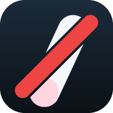

손 내려!
손끝이 입에 닿았어요

손톱
손끝이 입으로 올라가면 바로 알려줍니다.
영상은 기기 밖으로 나가지 않습니다.
카메라 켜고 시작
대기
–
거리 –
오늘 0회
가리기
일시정지
설정
설정
민감도 — 입에서 이만큼 가까우면 경고
숫자가 클수록 예민합니다. 기본 0.22 (얼굴 너비의 22%)
유지 시간 — 이만큼 계속 가까우면 경고
짧으면 즉각 반응, 길면 오탐이 줄어듭니다.
재알림 간격
경고 화면과 소리는 손을 뗄 때까지 계속됩니다. 이 값은 횟수·진동·음성에만 적용돼서, 짧게 여러 번 뜯어도 한 번으로 셉니다.
경고 표시
전체 화면 — 확실하게
은은하게 — 가장자리만 (독서실·카페)
소리 경고
음성 경고 — "손 내려"를 손 뗄 때까지 반복
진동 (안드로이드)
시스템 알림 (다른 탭에 있을 때)
랜드마크 표시
좌우 반전(거울)
카메라
기록
경고 테스트
기록 지우기
닫기